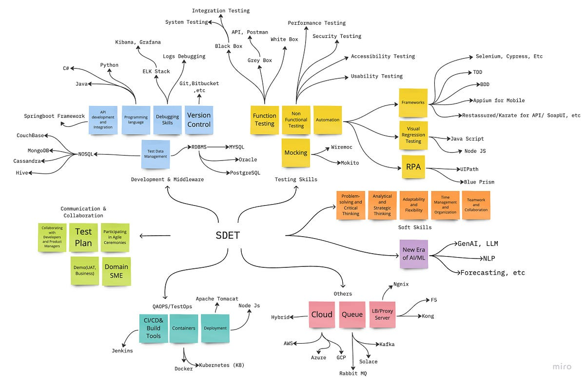

MIND MAP FOR SDET
Senior Software Development Engineer in Test (SDET)
Get in TouchSenior Software Development Engineer in Test with 10+ years of experience with emphasis on Quality Assurance through Manual and Automation testing of web-based and client-server applications.
Obtained working experience in various phases of Software Development Life Cycles (SDLC), Software Testing Life Cycles (STLC) and Defect Life Cycle and methods like Agile SCRUM, and Waterfall Model. Strong TDD exposure, contributing test cases before feature readiness.
Self-motivated, diligent, dedicated, detail-oriented, and innovative team-player/builder. Ability to adapt to new environments quickly, strong team player, good communication, good analytical and computation skills, enthusiastic learner, confident, sincere and committed.
St Louis MO (Remote)
Nov 2022 – May 2025
Austin TX (Remote)
Oct 2021 – Aug 2022
Portland, OR (Remote)
Aug 2018 – Oct 2021
New York, NY
Apr 2016 – Aug 2018
Austin, TX
Feb 2015 – Mar 2016
Developed a React and TypeScript based Subscription management API with Express.JS, integrated with SendGrid email API.
Utilized Pytest framework in personal Python projects to build and run unit and integration tests for API and data validation.
Created E-Commerce Application with custom-built checkout and cart pages using React-Typescript, integrated with Stripe to handle payment processing.
Contributed to open-source repositories on GitHub, including fixing Allure Report plugin issues, demonstrating collaboration and technical troubleshooting skills.
Bachelor's Degree
2001 – 2005
Python certificate from University of Michigan.
I'm always open to discussing new opportunities, projects, or collaborations.